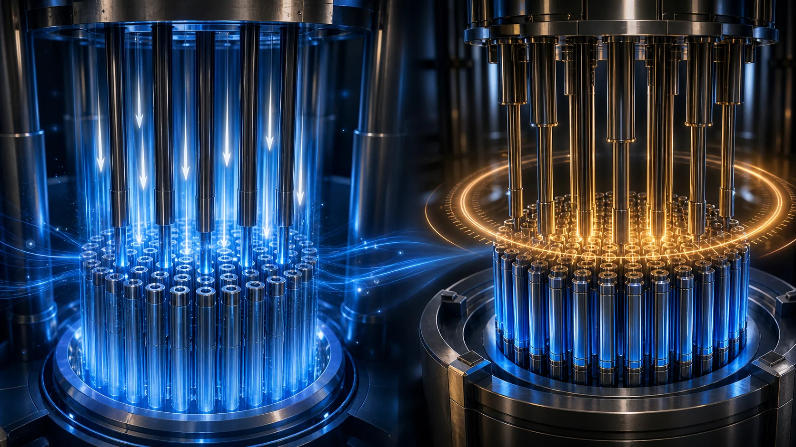
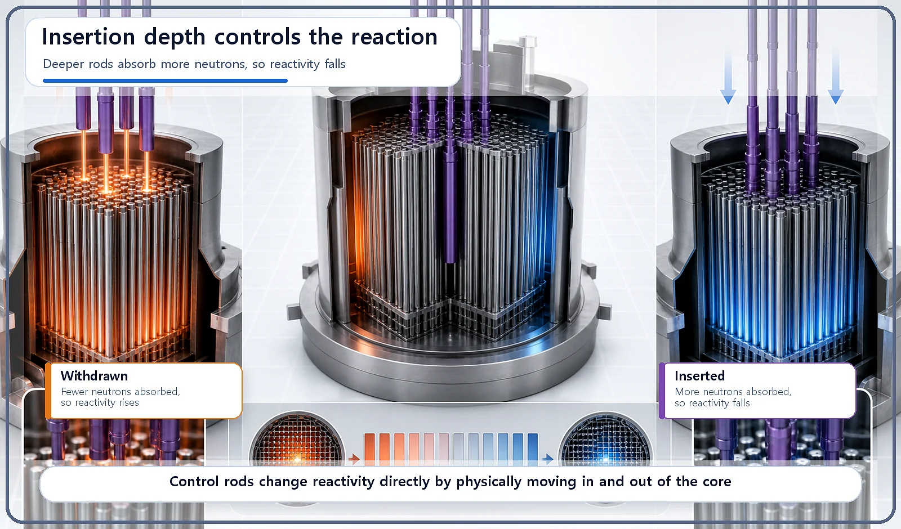
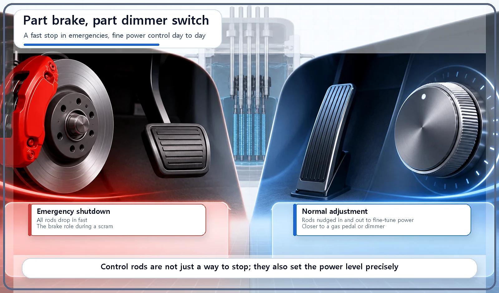

Reactor Components · 057
Brake or Gas Pedal? What Control Rods Really Do in a Reactor
Control rods slam on the brakes in an emergency, but most of the time they work more like a gas pedal or a dimmer switch.

A control rod is a rod made of neutron-absorbing material; the deeper it goes into the core, the more neutrons it absorbs and the lower the reactivity. In an emergency shutdown (scram) it acts like a brake, but in normal operation it fine-tunes power, more like a gas pedal or a dimmer switch.
Two pedals, one foot
When you drive, your right foot switches between two pedals. When you have to stop in a hurry, you stamp on the brake. When you just want to ease your speed up or down a little, you work the gas pedal gently. Same foot, completely different jobs depending on the situation.
We've already looked at the physics behind keeping a reactor under control, ideas like reactivity and prompt criticality. This time we turn to the physical part that puts those principles into practice: the control rod. And we'll try to answer a simple question: is a control rod the reactor's brake?
What a control rod actually does
A control rod is a rod made of a material that is very good at absorbing neutrons. Typical examples are boron, cadmium and hafnium. The rods slide into, or out of, designated slots between the fuel assemblies, and that is how they adjust the number of neutrons in the core.
The principle is simple. The deeper a control rod is inserted, the more neutrons it absorbs and the lower the reactivity (the reaction tends to die down). Pull it out, and the reactivity rises (the reaction tends to grow).

So, is it a brake?
Here is the real question. The short answer: a control rod both is and isn't a brake.
When it really is a brake: emergencies. When a reactor has to be shut down immediately, all of the control rods are dropped into the core together, fast. This is commonly called a scram. At that moment the control rods work very much like a brake bringing a car to a sudden stop.
When it isn't: normal operation. Control rods aren't used only for stopping. They are also used to nudge reactivity up or down in very small steps, fine-tuning the reactor's power to exactly the level wanted. That kind of fine adjustment has less in common with a brake and more with a dimmer switch that slowly turns the lights up or down, or with a car's gas pedal.

What makes a good control rod?
| Requirement | Why it matters |
|---|---|
| Strong neutron absorption | It needs a large absorption cross section to soak up neutrons |
| Durability | It must last a long time without reacting with the coolant or structural materials |
| Right speed and precision | Slow and precise for everyday fine-tuning; very fast and complete insertion for emergency shutdown |
Why this component matters
Control rods are one of the most direct means a reactor has for actively adjusting reactivity, and their emergency shutdown function in particular is a key element of reactor safety design.
But control rods aren't the only way to adjust reactivity. Borated water is dissolved in the coolant and spreads evenly through the whole core. It controls reactivity in a quite different way from control rods, and that difference deserves an article of its own.
Two common mix-ups
"Control rods are only for shutting a reactor down or stopping it completely." No. In normal operation they are also used to fine-tune reactivity. A full stop (a scram) is just one special situation among their uses.
"Without control rods, a reactor could never be stopped." Control rods are the best-known shutdown tool, but other means of adjusting reactivity, such as borated water, exist alongside them.
Key takeaways
Changing how deep a control rod is inserted changes the core's reactivity. In a scram the rods act like a brake; in normal operation they fine-tune power like a gas pedal or a dimmer switch. A good control rod combines strong neutron absorption, durability, and the right speed and precision of movement, and it shares the job of reactivity control with other means such as borated water.